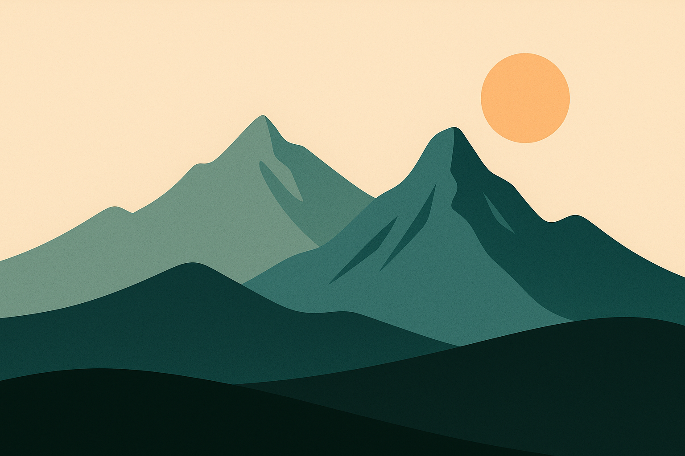

Nestled at the base of the Rocky Mountains, Boulder, Colorado, is a
vibrant city known for its stunning natural beauty and progressive
cultural scene. With paved trails, accessible accommodations and
wheelchair‑friendly public spaces, the city is an excellent destination
for travelers with mobility needs. While some areas such as rugged
hiking trails or older buildings can present challenges, the city
overall offers a welcoming and inclusive environment.

A stylized illustration of the Rocky Mountains provides visual context without conveying essential information.
map Accessible Attractions
The following table highlights some of Boulder's accessible attractions and key
features. Each attraction includes smooth pathways, step‑free entrances and
nearby accessible facilities.
Major accessible attractions in Boulder and their key features
Attraction
Accessible Features
Pearl Street Mall
Smooth brick pathways, ramps at intersections, step‑free entrances,
accessible restrooms and plentiful accessible parking.
Boulder Creek Path
Paved and relatively flat trail with benches and shaded rest areas;
starting near downtown provides the smoothest access points.
Chautauqua Park
Paved walkways connecting key areas; accessible meadows and dining
options even though most hiking trails are rugged.
University of Colorado Boulder
Ramps, elevators and accessible restrooms throughout the campus;
accessible attractions include the CU Art Museum and Fiske
Planetarium.
NCAR (National Center for Atmospheric Research)
Ramps, elevators and accessible restrooms within the building;
interactive exhibits and panoramic indoor views are fully
accessible.
Museum of Boulder
Interactive exhibits with elevators and ramps on every level;
wheelchair‑friendly rooftop terrace and accessible special
events.
Boulder Farmers Market
Flat, paved surfaces throughout the market with accessible restrooms
and parking; arriving early helps secure accessible parking.